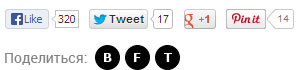
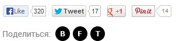

ПРОКАТИЛСЯ НА СВЕРХ БЫСТРОМ МОТОЦИКЛЕ
Дилерская сеть BMW Motorrad многие годы снабжает полицию и другие госструктуры в странах Европы и других частях мира своими мотоциклами.
Дилерская сеть BMW Motorrad многие годы снабжает полицию и другие госструктуры в странах Европы и других частях мира своими мотоциклами.
Гоночный уикенд пилота DMC Racing Алексея Иванова, заменяющего в классе "Суперспорт" чемпионата мира Владимира Иванова, который сейчас восстанавливается после.
Итак, в Германии на треке Нюрбургринг сегодня завершился очередной, десятый по счету уикенд гоночной серии WSBK-2013.